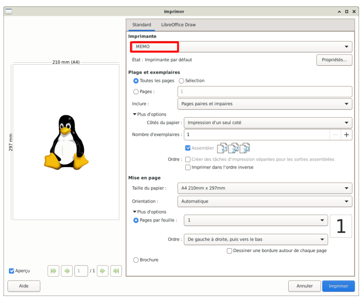
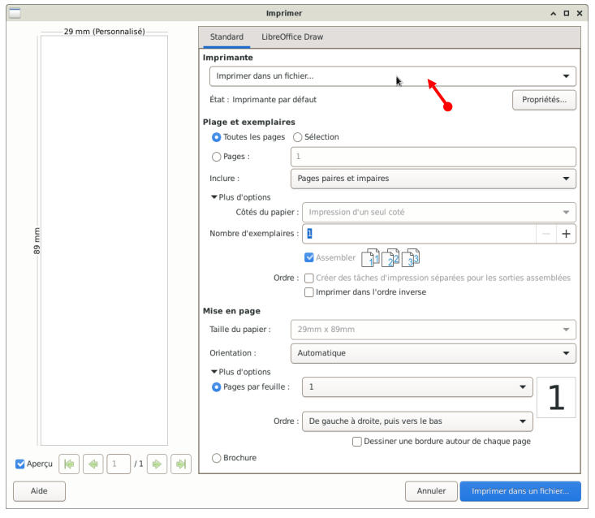
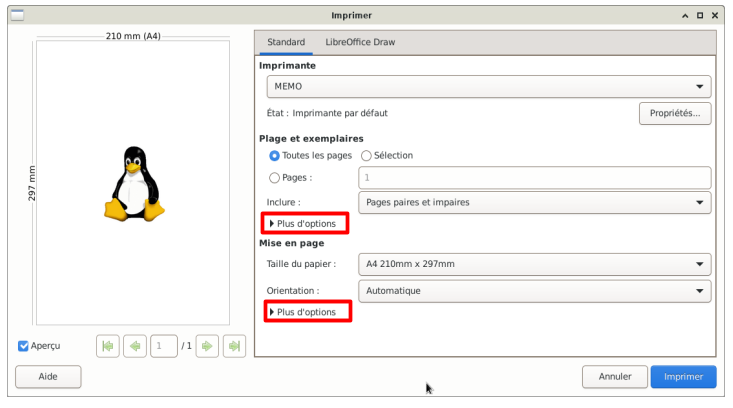
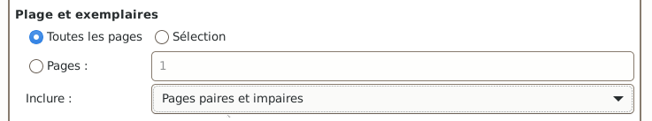
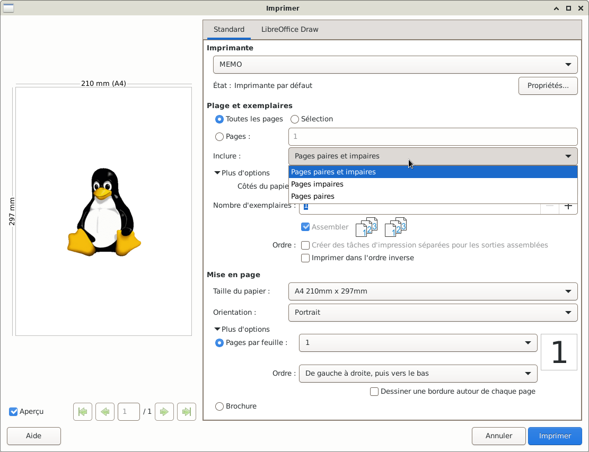
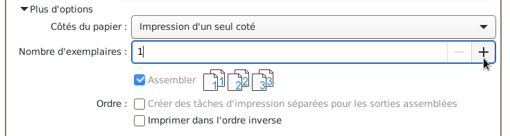
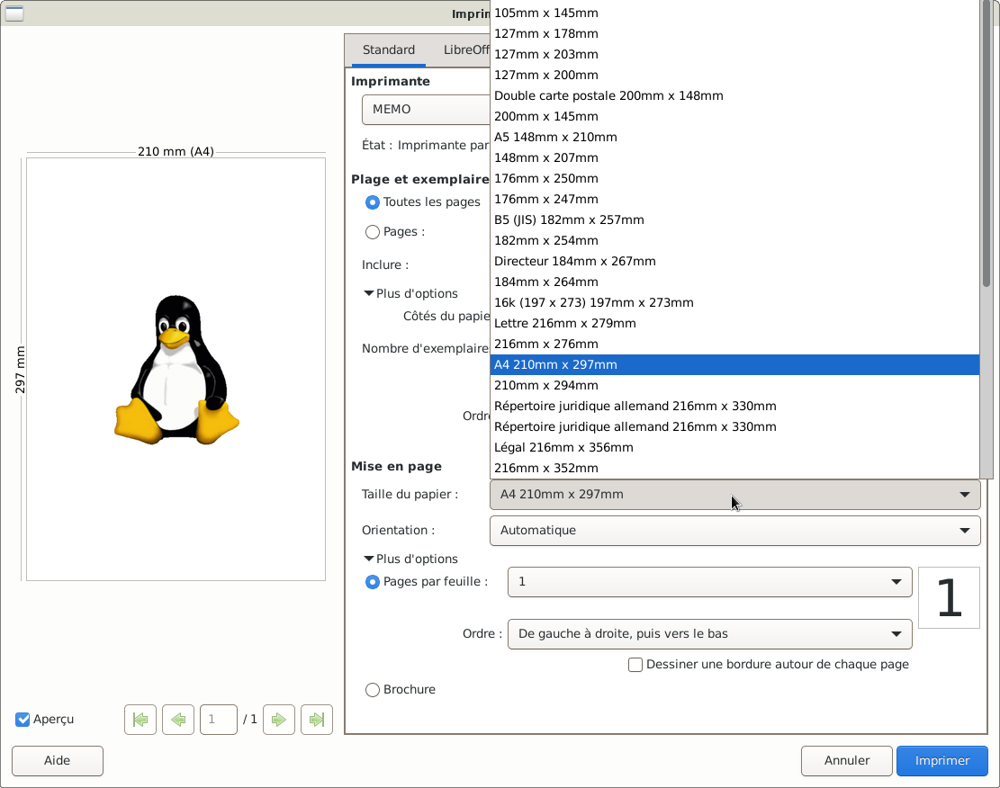
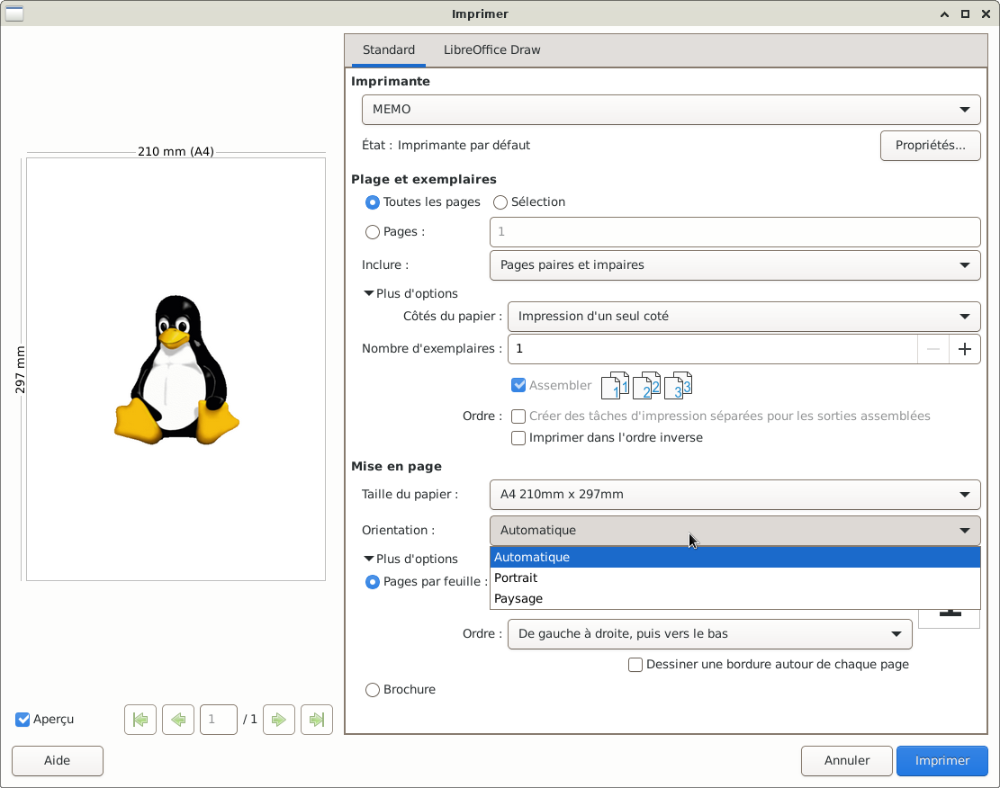
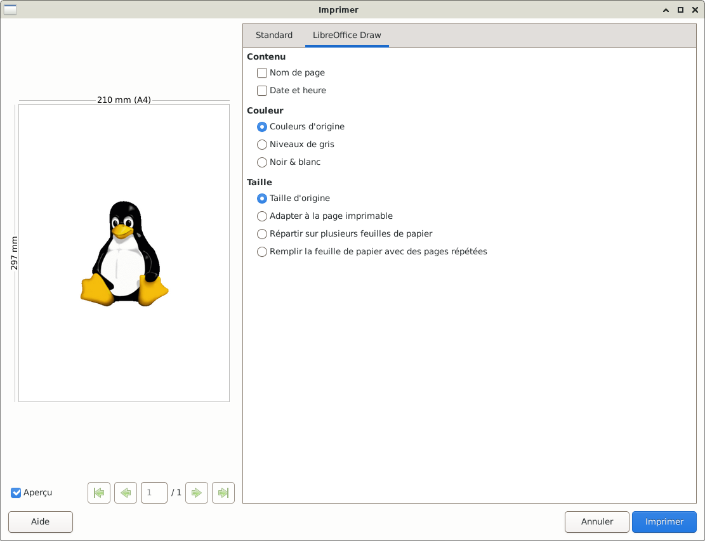
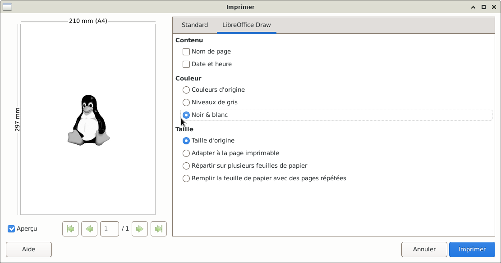

GLICD
Paramètres d'impressions avec LibreOffice :
Debian et
Xfce
Lors d'une demande d'impression dans LibreOffice, la boîte de dialogue se présente différement que celle
vue dans le chapitre imprimante : Paramètres d'impressions avec
La boîte de dialogue
Le but est de comprendre le cheminement pour paramétrer l'impression.
Tout ne sera pas décrit dans ce MEMO, quelques liens officiels pour plus de détails :
Documentation libreoffice
Ou le Wiki.documentfoundation
Et sur LibreOffice Draw
- Après avoir sélectionné l'option « Imprimer » depuis l'une des applications LibreOffice
Dans cet exemple : LibreOffice Draw
Une fenêtre s'ouvre sur l'onglet « Standard » puisqu'il est souligné en bleu.

- Si l'imprimante a été configurée par défaut, elle doit être présente sous Imprimante.
Dans cet exemple, l'imprimante est nommée « MEMO »
- Si l'imprimante n'apparaît pas par défaut :
simple clic sur le bouton qui se trouve sous Imprimante une liste déroulante va apparaître
Faire le choix de l'imprimante.
Si besoin se rendre au chapitre Imprimante :
L'interface graphique de configuration

- Si les options n'apparaissent pas
Simple clic > Plus d'options

- Sous Plage et exemplaires
- Rond bleu « Toutes les pages » cela veut dire que toutes les pages seront imprimées
- Simple clic sur le rond « Selection » seule la page sélectionnée sera imprimée
- Imprimer seulement quelques pages du document
Simple clic sur le rond « Pages » puis dans le rectangle nommé « 1 » saisir, à l'aide du clavier,
la page ou les pages à imprimer. Exemple, imprimer les 4 premières pages : 1-4

- Simple clic sur le bouton « Inclure »
Si besoin, imprimer seulement les pages paires ou impaires,
par défaut pages paires et impaires

- Nombre d'exemplaires
Simple clic > « + » augmente le nombre de copies à imprimer
Simple clic > « - » diminue le nombre de copies à imprimer

- Sous Mise en page
- Simple clic sur le bouton « Taille du papier »
Une liste déroulante apparaît, permettant de choisir le format du papier.

- Simple clic sur le bouton « Orientation »
Si besoin, choisir portrait ou paysage, par défaut Automatique

- Simple clic > l'onglet LibreOffice Draw

- Sous Couleur
Imprimer en noir et blanc : Simple clic sur le rond « Noir et blanc »
l'image change en noir et blanc.

- Si tout est bon, simple clic > Imprimer
Si besoin, se rendre au chapitre Imprimante :
L'état d'impression du document.

Retour
Informations sur le logiciel libre et
Merci.
Marques déposées :
Ce site ne fait pas partie de Debian, n'est pas produit par le projet
Debian, ni approuvé par le projet Debian.
Ce site n'est pas affilié à Debian. Debian est une marque déposée appartenant
à Software in the Public Interest, Inc.
Contribuer :
Ce site ne fait pas partie de XFCE, n'est pas produit par le projet
XFCE, ni approuvé par le projet XFCE.
Ce site n'est pas affilié à XFCE.
Ce site est juste réalisé par un passionné.